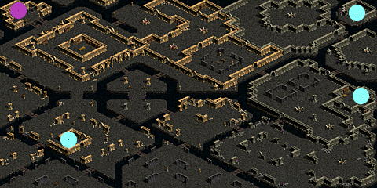
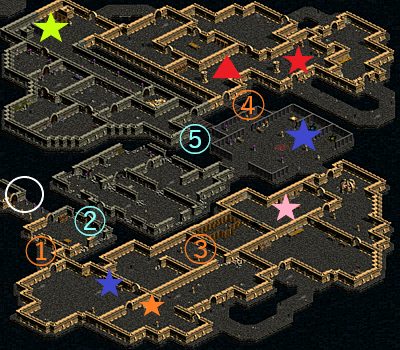

古代王の墓
| 制限Lv | 1～100 |
|---|---|
| 秘密の入口 | 地下水路B1（5.8） |
| 報酬 | 途中終了した場合 経験値8万 10万G パーティー平均Lv1～25 経験値8万 10万G 盗掘王の秘宝 パーティー平均Lv26～50 経験値8万 15万G 盗掘王の秘宝 パーティー平均Lv51～75 経験値18万 20万G 盗掘王の秘宝 パーティー平均Lv76～100 経験値30万 25万G 盗掘王の秘宝 + 経験値4万 4万G フルヒールポーション3個 |
| ミニマップの表示条件 | - |
| フィールド属性低下 | なし |
| 罠 | 床罠なし 扉罠なし |
| 固定宝箱 | なし |
<マップ>
秘密の入口 地下水路B1
|  |
● ● |
… 移動ポータル … 秘密の入口 |
秘密ダンジョン 古代王の墓
|  | ○ ★ ★ ★ ★ ★ ★ ▲ア |
… 初期位置 … 本棚 … 宝箱 … 机 … クリスタル3種類 … 魔方陣 … 棺 … アドタレス |
<手順>
リーダーがオーウェンに話す。
リーダーがルークに話す。この時のパーティーメンバーの平均Lvにより選択肢
・パーティー平均Lv50以下の場合
①扉が開く。
再度ルークに話して選択肢「はい。お願いします。」->②扉も開く。
・パーティー平均Lv51以上の場合
選択肢「なるほど。良い情報をありがとうございます！」->②扉が開く。再度ルークに話すと① 扉も開く。
「念のために、両方の扉を開けてほしいです。」 ->①扉と①扉の両方が開く。
※①扉と②扉から2ルートに分かれる。引き返して両方進んでも片方だけでも可。
①扉側は、低Lv向け。
②扉側は、高Lv向け。
★本棚（25.143）、（67.125）をクリック。どちらでも可。
★宝箱（37.154）をクリック。ボーナス報酬 4万G フルヒールポーション3個
★本棚をクリックする前に、★宝箱をクリックすると15程ダメージを受ける。
③扉をクリック。選択肢「扉を開けて、悪魔を倒す！」
シールデビル（Lv50）Zinを狩る。
③奥の扉が開く。
★机（73.106）をクリック。選択肢「使う」
周囲の墓場クモ（Lv35）に400程ダメージを与える。
リーダーがレミーに話す。この時のPTメンバーの平均Lvにより選択肢
・パーティー平均Lv50以下の場合
選択肢「報酬を受け取って引き返す」->「挑戦する」->「使う」->★★ ★クリスタルをクリック。
->「はい」-> 秘密終了。経験値8万 15万G （盗掘王の秘宝なし）
引き返さない->「使う」 ->★★ ★クリスタルをクリック。
・パーティー平均Lv51以上の場合
選択肢「ありがとうございます。助かります。」->★★ ★クリスタルをクリック。
※④扉と⑤扉から2ルートに分かれる。引き返して両方進んでも片方だけでも可。
④扉側は、一般MOBが多数で道が長い。
⑤扉側は、ボスMOBが5匹で道が短い。
難易度が低いのは④扉側。
・④扉側の場合
⑤扉クリック。選択肢「行く」
アドタレスに話す。選択肢「私たちもちょうど手が空いていたところです。その勝負、受けて立ちましょう！」
NPCアドタレスがMOB化。
アドタレス（Lv100）を狩る。ボーナス報酬 経験値4万
アドタレスのHP1/2になると墓の守護兵（Lv60）4匹が出現。
アドタレスを倒すと墓の守護兵4匹は即死。
直近のショートカット用の扉が開きます。
★魔方陣（71.31）をクリック。選択肢「読んでみる」
周囲の墓の亡霊（Lv75）が非アクティブになる。
・⑤扉側の場合
⑤扉をクリック。選択肢「行く」
拷問家シルヴァン（Lv80）を狩る。拷問家シルヴァンを倒すと周囲の拷問技術者（Lv70）2匹は即死。
狂戦士デリック（Lv85）を狩る。
メガスパイダー（Lv90）を狩る。メガスパイダーを倒すと周囲の墓場クモ（Lv35）3匹は即死。
ブリーデン男爵（Lv95）を狩る。
剣闘士ギリアン（Lv100）Zinを狩る。範囲毒攻撃あり。
★棺（13.15）をクリック。選択肢「触る」
王の家来（無敵モンスター）が出現。PTメンバー全員が棺の付近にワープ。
リーダーがガーインに話す。この時のパーティーメンバーの平均Lvによりクリア報酬が変わる。
<補足>
П扉は鍵なし扉なのでクリックで開く。
★★ ★レミーのクリスタルは3個の内から各自1個のみを選択。パーティーメンバーが各自別々のクリスタルでも可。
クリスタルは破壊不可、マップ移動やリログすると消滅する。
消滅した場合は再度クリックすれば何度でも入手・変更できる。
クリア報酬は、最後にリーダーがガーインに話す時のパーティーメンバーメンバーの平均Lvにより変わる。
黒落ち・灰色のメンバーも含む。
入場時や途中でのLvは不問。
★本棚、★宝箱、★机、★魔方陣、 ★★ ★レミーのクリスタルをクリックしなくても、レミーに話さなくても、
モンスターを全く狩らなくても、全狩りしても最終クリア報酬には影響しない。
モンスターを全く狩らなくても②扉->④扉->★ 棺へ進めば最短でクリア可能です。
アドタレスを倒さなくてもクリアは可能。倒した場合はボーナス報酬「経験値4万」。(※一部入らない条件がある模様)
秘密ダンジョン補足
- 1-100の秘密ですが、試練のクリスタルと盗掘王の秘宝を入手可能です。- PTの平均レベルは報酬受領時のレベルが参照されます。
- 敵モンスターのレベルは30～80までと幅広いです。40～50Lvが一番適正に近く、経験値を獲得しやすいです。